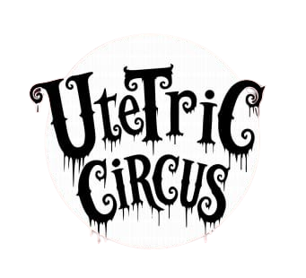

Al igual que los atletas del circo, tú también debes cuidar tu cuerpo. ¡Mente sana en cuerpo sano!
La alimentación debe incluir frutas, verduras, proteínas, carbohidratos y lípidos saludables. Recuerda mantenerte hidratado. Una dieta saludable favorece el bienestar físico y mental.
¿Sabías que...? Los chapulines tienen más proteína que un filete de bistec y el amaranto contiene los nueve aminoácidos esenciales que tus células requieren.
En el circo las lesiones más comunes son: esguinces y torceduras en tobillos, rodillas y muñecas, así como desgarres musculares. Para prevenirlas, se requiere entrenamiento, descanso y verificar que trampolines, trapecios y escaleras estén en perfectas condiciones.
Los músculos están conformados por proteínas llamadas Actina y Miosina. Estas requieren ATP para permitir la contracción muscular. El buen funcionamiento de este proceso se relaciona con una buena alimentación.
Antes de 2015, en México se utilizaban animales silvestres en los circos. Actualmente, su uso está prohibido; ahora solo se pueden utilizar animales domésticos como perros, gatos, caballos y conejos bajo estrictas normas de cuidado.